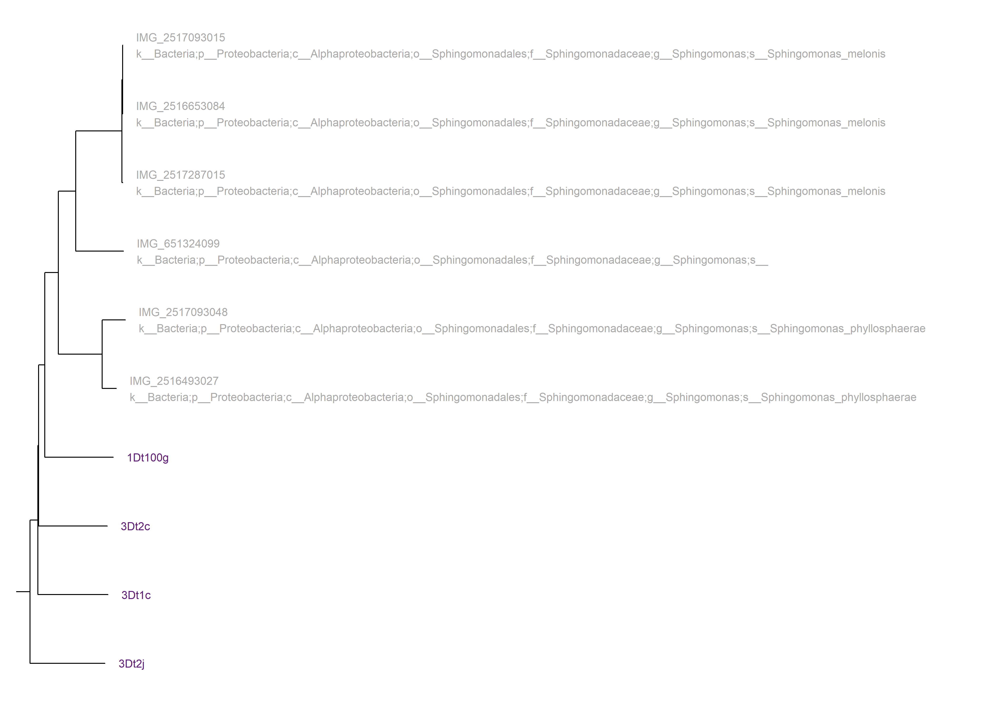
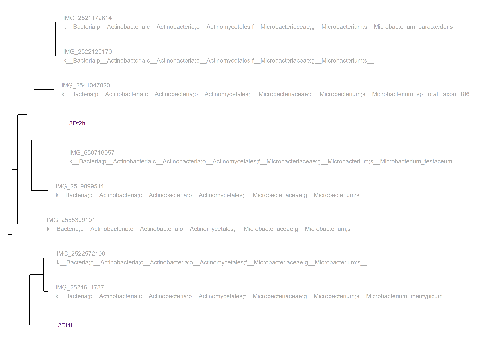
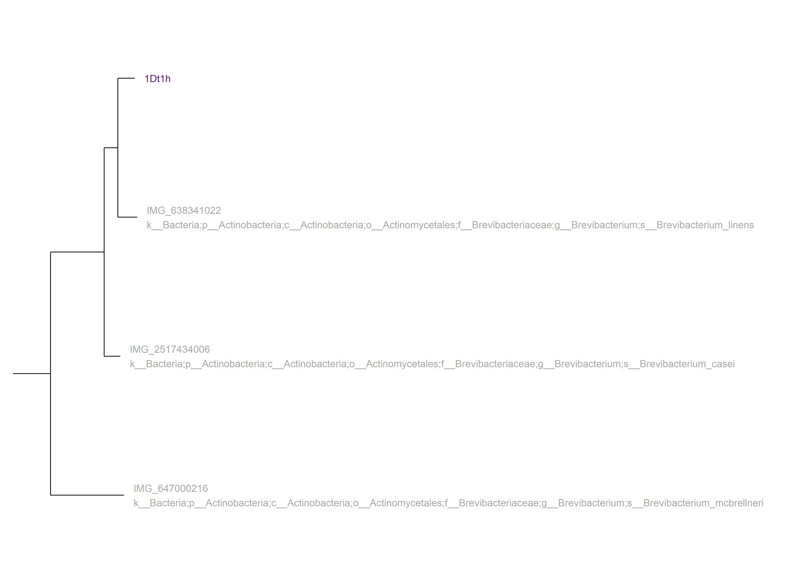
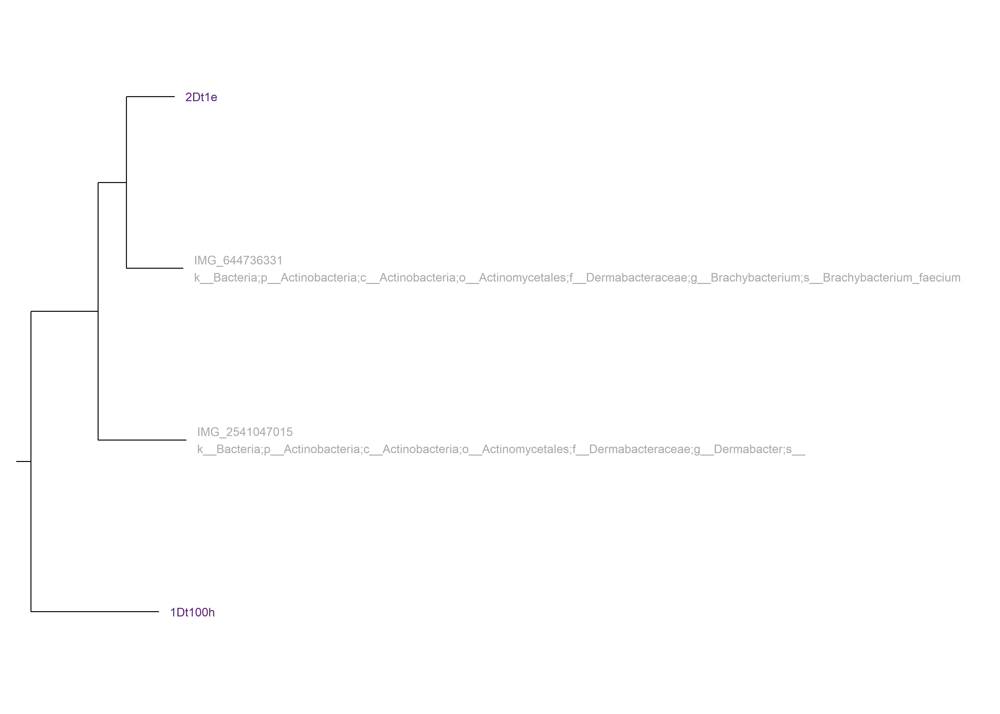
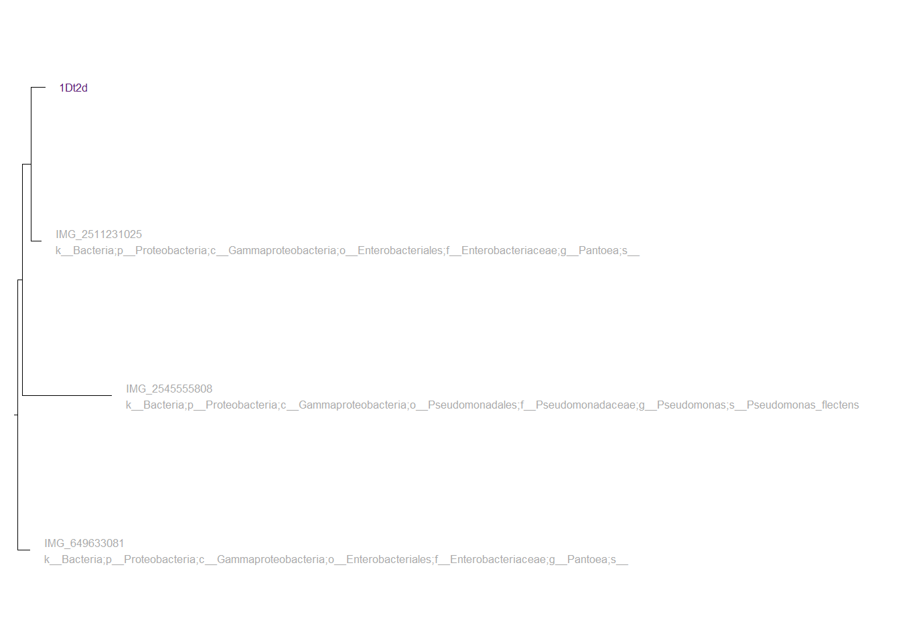

| Accession | Marker lineage | Completeness | Contamination | GC | GC std | Genome size | contigs | Longest contig | Coding density | Predicted genes |
|---|---|---|---|---|---|---|---|---|---|---|
| 1Dt1h | o__Actinomycetales | 100.00 | 0.00 | 65.519% | 4.284% | 4,336,578 | 4 | 2,051,556 | 90.334% | 3,818 |
| 1Dt2d | f__Enterobacteriaceae | 100.00 | 0.90 | 53.889% | 1.270% | 5,345,294 | 6 | 2,288,975 | 87.931% | 4,937 |
| 1Dt100h | o__Actinomycetales | 98.84 | 0.19 | 52.446% | 0.564% | 2,379,473 | 2 | 2,349,045 | 89.586% | 2,071 |
| 2Dt1l | o__Actinomycetales | 98.82 | 2.32 | 67.742% | 0.844% | 3,996,506 | 16 | 1,089,026 | 93.707% | 3,915 |
| 3Dt1c | o__Sphingomonadales | 97.23 | 1.19 | 66.487% | 1.385% | 3,636,266 | 86 | 275,317 | 90.660% | 3,433 |
| 3Dt2j | o__Sphingomonadales | 96.19 | 1.21 | 65.644% | 1.752% | 2,813,977 | 75 | 195,248 | 92.779% | 2,786 |
| 3Dt2c | o__Sphingomonadales | 95.75 | 0.85 | 66.093% | 1.604% | 3,819,610 | 84 | 247,364 | 89.769% | 3,516 |
| 3Dt2h | o__Actinomycetales | 87.98 | 0.51 | 70.327% | 1.317% | 3,006,227 | 166 | 125,244 | 90.324% | 2,978 |
| 1Dt100g | o__Sphingomonadales | 76.77 | 0.00 | 68.105% | 1.332% | 2,104,071 | 153 | 74,994 | 92.645% | 2,179 |
| 2Dt1e | o__Actinomycetales | 44.74 | 0.00 | 71.162% | 1.565% | 2,332,403 | 149 | 70,689 | 89.402% | 2,215 |
| Source: CheckM lineage_wf performed on 2024-12-25 | ||||||||||
4 CheckM
4.1 Introduction
£bookmark add citation: https://pmc.ncbi.nlm.nih.gov/articles/PMC4484387/
After my reset at christmas, I wanted to fully explore and understand what this tool does and outputs. I looked at files and documentation so that I could better understand what the results meant for the samples. This lead to many, smaller analyses conducted. All of these processes are noted throughout Notebook 1. These included comparisons between CheckM and CheckM2, these are not included here, this is just a list of the CheckM processes run.
4.2 Check M lineage_wf
4.2.1 Introduction
A smaller analysis done towards the beginning of the project. CheckM analyses were done on the local Bangor samples largely for the purposes of data exploration and practice, with a side aim of comparing and contrasting with CheckM2, as from what I had read CheckM2 was not a direct predecessor to Check M. This was used to describe the samples in terms of metrics of quality.
4.2.2 Methods
Using this script I ran a slurm job on hawk under the lineage_wf (workflow) of CheckM for all 10 Bangor-made samples. I also worked on exporting the data I want to tabulate off of hawk. This was done by identifying different documents in the flye directories on hawk, specifically files called “assembly_info.txt” which contain the same information, but are vastly more exportable. To access them one should enter this on the command line:
cd /scratch/scw2160/02_outputs/flye_asm/flye_asm_[accession]/
Using this script I exported them off of hawk, to my local machine.
Using the CheckM documentation. I found the output that i needed was bin_stats_ext.tsv. This is where the contamination and other assorted fields are presented. Thus, i can import this file to R to visualise. I then developed and improved the script CheckMtablegenerator.R. Which creates Table 4.1. This used a few packages, including one for tabulation, gt. This is a very useful package for table generation, here is some info.
4.2.3 Results
The CheckM analysis produced this output directory. My export script exported all 10 “assembly_info.txt” files to a directory in my home directory, as well as adding their accession ID to the name, this is important as otherwise I would not know which file belonged to each accession. I then brought them down and stored them here.
Table 4.1 shows that CheckM could not identify lineage to genus for any sample, and only found the family in one case. 7 of the 10 samples scored above 95% for completeness, with the lowest, 2Dt1e, being under 45%, I did not know what counted as “significantly complete”, so arbitrarily placed the value at 90%. There does not appear to be a correlation between completeness and contamination. Contamination is fairly low in all, none above 3% and 3 samples on 0.00%. There is a general inverse relationship between completeness and number of contigs.
As mentioned, Table 4.1 is a subset of the data, there was more outputted by CheckM, some of which overlaps with other analyses, but i did not know if it was relevent to include, so left it out, however, creating a new one with the omitted fields in would not be hard. This table will pair with one produced from CheckM2, because from what i’ve seen one is kind of an improvement on the other, but they kind of do different things, its confusing and thus why i want to do the comparison for future reference.
4.2.4 Conclusion
The main purpose of doing this is to compare with Checkm2, so im not sure what conclusions i can get from just this, other than many of the samples look sufficiently complete and i learned a fair amount from this experience. I think this will act as a good first step to compare future analysis against, for confirmation, as many upcoming analyses will give repeat data in some areas. Some of the field, for example “GC” are odd and i dont quite understand their significance, perhaps Aaron can give more info when he gets to this part of the notebook.
4.2.5 Scripts
4.3 CheckM tree_qa
4.3.1 Introduction
In the CheckM documentation for lineage_wf, there are 6 functions, 5 are categorised as M (Mandetory), however a 6th “checkm tree_qa” is marked as “R” and is stated to be optional, looking closer at this function, it has 5 different potential outputs that look interesting, so I figured I would give it a go and see what I could get out of it, sort of exploratory.
4.3.2 Methods
The vast majority of the code required was already used for the original checkm bash script, so I copied it and made the modifications, producing this script. I could not figure out a way to run all 5 functions at once, so I had to go into the file and change the name (because these were all outputting to one place so naming the function was required to distinguish)and -o function(how to select the desired output) for each iteration. This was not an issue however as when run as a slurm job on hawk, none of the options took longer than 10 seconds to complete. In order to turn the output from option 2 into a table, i created this R script, which outputs this file. I am not sure if i mentioned it above, but i found a way to do the formatting for my tables in this document, which frees up memory and reduces load times, by loading in a .csv of the cleaned data, instead of cleaning the data and doing the whole script in R, which also creates multiple instances. Basically, it was a whole thing, but now it is not a problem because of some clever coding.
4.3.3 Results
I created an output directory to store all the outputs. As mentioned, there were five; 2 are metadata tables which contain taxonomy data, one basic and one with more data. The next two are .tree files which place the samples in a tree with online references from the IMG database, one had the ID on that system, in the other the tip labels contained the full taxonomy of each sample. It is possible i can use these for a comparative analysis of CheckM and gtdbtk or ncbi and img. The fifth and final output is: “multiple sequence alignment of reference genomes and bins which can be used to infer a de novo genome tree”. It looks to be a fasta file for proteins in each sequence, as of now i am unsure what to do with it, I recognize de novo from gtdbtk, is there a link? I will have to consult Aaron for this one.
| Accession | Unique Markers (of 43) | Taxonomy (Contained) | Taxonomy (Sister Lineage) |
|---|---|---|---|
| 1Dt100g | 41 | k__Bacteria→p__Proteobacteria→c__Alphaproteobacteria→o__Sphingomonadales | f__Sphingomonadaceae→g__Sphingomonas |
| 1Dt100h | 42 | k__Bacteria→p__Actinobacteria→c__Actinobacteria→o__Actinomycetales | f__Dermabacteraceae |
| 1Dt1h | 42 | k__Bacteria→p__Actinobacteria→c__Actinobacteria→o__Actinomycetales→f__Brevibacteriaceae→g__Brevibacterium | s__Brevibacterium_linens |
| 1Dt2d | 43 | k__Bacteria→p__Proteobacteria→c__Gammaproteobacteria→o__Enterobacteriales→f__Enterobacteriaceae→g__Pantoea | s__ |
| 2Dt1e | 32 | k__Bacteria→p__Actinobacteria→c__Actinobacteria→o__Actinomycetales→f__Dermabacteraceae | g__Brachybacterium→s__Brachybacterium_faecium |
| 2Dt1l | 42 | k__Bacteria→p__Actinobacteria→c__Actinobacteria→o__Actinomycetales→f__Microbacteriaceae→g__Microbacterium | unresolved |
| 3Dt1c | 43 | k__Bacteria→p__Proteobacteria→c__Alphaproteobacteria→o__Sphingomonadales | f__Sphingomonadaceae→g__Sphingomonas |
| 3Dt2c | 43 | k__Bacteria→p__Proteobacteria→c__Alphaproteobacteria→o__Sphingomonadales | f__Sphingomonadaceae→g__Sphingomonas |
| 3Dt2h | 42 | k__Bacteria→p__Actinobacteria→c__Actinobacteria→o__Actinomycetales→f__Microbacteriaceae→g__Microbacterium | s__Microbacterium_testaceum |
| 3Dt2j | 43 | k__Bacteria→p__Proteobacteria→c__Alphaproteobacteria→o__Sphingomonadales | f__Sphingomonadaceae→g__Sphingomonas |
| Source: CheckM tree_qa performed on 2024-12-30 | |||
Table 4.2 is a subset of output 2 showing some taxonomic assignments for the samples, as well as “unique markers”. 9 are above 40, with only 2Dt1e falling below at 32. Output 1 is a simplified version of output 2, with the same main fields but missing some found in 2. As mentioned, this is a subset, due to space, and some difficulties in coding, I only took the unique fields. The output table also contained data on number of genes and fragment count, GC etc that is already shown in Table 4.1. As well as this, there were some extra fields focusing on the mean values of each field for the groupings each sample were in, I believe this is the final value in “Taxonomy (Contained)”, again because of space and relevance i cut them from the final product.
4.3.4 Tree_qa Phylograms





Outputs 3 and 4 produce the same tree files, with some minor differences in labeling, so i have only outputted the results from the one that returns the full taxonomic ID of each sample in the tip label. The trees look to be trustworthy, confirming previous taxonomic assignments i have run. It should be noted these use the IMG database, not the NCBI database, this looks to be a smaller database as many of our samples are outgroups on the trees with no direct sister samples, this can be seen most for Figure 2, with all 4 samples in the outgroup. This analysis does confirm again that sample 1Dt2d identified first as “Enterobacter cancerogenus” is in fact a species of the genus “Pantoea”. As mentioned above i am yet to figure out if i can do anything with the output from option 5, so i will discuss with Aaron when term time begins again. Many of the samples cannot be given a species name by this analysis, for example, all of the samples in the genus Sphingomonas are closest to each other, so it is hard to discern if they are of different species.
4.4 Conclusion
Output 2, and to a lesser extent 1, present interesting data, it is not as useful as the data produced by the main analysis, but i think it was worth doing. It is possible i am not fully apreciating all of the outputs of this. Only very few of the samples get a taxonomy to the species level, however, it does confirm that sample 1Dt2d, marked “Enterobacter cancerogenus” by early taxonomic analysis actually belongs to the genus Pantoea. Confirming the analysis done all the way back in the technical spike for gtdbtk de novo Conclusion. This is mirrored in the outputs of the phylogenetic trees, which are good, but i doubt are a suitable replacement for the ones output by gtdbtk, which i will get onto at some point in the future. I have mentioned 5 several times, so i will just say that i might come back to look at it later. I learned some new things vis a vis new functions to tabulate like changing text size and pruning/collapsing trees in R, so i am less reliant on dendroscope, and have less tree files floating around. Overall, i think this has been a useful thing to do, even if the outputs are not as important or useful as what i have done or am about to do, even just for the experience alone, but who knows, maybe there is something in this data that will be useful to someone reading this.